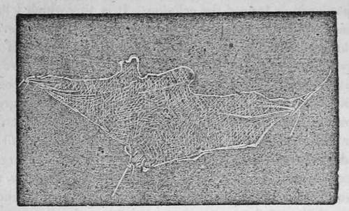

Chapter III. Structure Of The Human Body
Description
This section is from the book "Human Physiology For The Use Of Elementary Schools", by Charles Alfred Lee. Also available from Amazon: Human Physiology, for the Use of Elementary Schools.
Chapter III. Structure Of The Human Body
1. The human body is composed of solids and fluids. These terms, however, are merely relative. There is no fluid which does not contain some solid matter in solution ; and no solid however dense, which does not contain some fluid. The nature of both fluids and solids is essentially the same, for we see one readily passing into the other ; indeed no fluid long remains a fluid, and no solid a solid ; but the fluid is constantly passing into the solid, and the solid into the fluid.
2. The relative proportion of the fluids in the human body much exceeds that of the solids, the excess being about 8 to 1. But the excess varies according to the age. The younger the age, the greater the preponderance of the fluids. As age increases, the fluids gradually diminish, till in old age, they become so much lessened, that the body assumes a dry, wrinkled, shriveled and stiff appearance. In this manner we explain the softness and roundness of the body in infancy and youth, and its hard, unequal and angular surface in advanced life.
3. The fluids, then, are very important, as they furnish not only the material out of which every part of the body is formed, but they also furnish the medium by which the noxious and useless matter is carried out of the system. Every part of the body is a laboratory in which complicated and transforming changes are constantly going on; the fluids are the materials on which these changes are wrought, and the vital forces are the agents by which they are effected. The fluids either contribute to form the blood, or they
Constitute the blood, or having performed some special office, as moistening the various surfaces, are returned to the blood ; hence according to their nature, they are called aqueous, albuminous, mucous, serous, etc.
4. The solids are composed of the same chemical principles as the fluids, and by analysis are reduced to the same ultimate elements. In the formation of solids, the particles of matter are supposed to be arranged in one of two modes, viz., either in the form of minute threads or fibres, or of thin plates or laminae; hence every solid of the body is said to be fibrous, or laminated. These fibres, or laminae are variously interwoven, and interlaced, so as to form a net work; and the spaces included between them are called areolae, or cells. According to some microscopical observers, the ultimate animal solid is a minute sphere or globule of matter, not exceeding an eighth thousandth part of an inch in diameter.
5. The fibrous or laminated matter is often so arranged as to form a structure, possessing distinct and peculiar properties ; and each of these modifications is considered a separate form of organized matter, and is called a primary tissue. These tissues have been variously classified by different anatomists and physiologists, some making them to consist of five, viz., the membranous, the cartilaginous, the osseous, the muscular, and the nervous; while others make but three, the cellular, the muscular, and the nervous. Another arrangement is into filaments, fibres, tissues, organs, apparatuses, and systems.
6. A filament is made up of a series of minute or primitive molecules, arranged in a row. A fibre is composed of several of these filaments united together, as the muscular and nervous fibres. A tissue is supposed to be composed of fibres disposed in planes, forming in this manner an expansion, or when crossing each other, forming spongy solids, with cells interspersed throughout. In this way are the cellular, serous, and mucous membranes formed. When these tissues are so arranged as to form a piece of animal mechanism, designed for the performance of a certain office, they form what is called an organ, as the lungs, brain, liver, etc. The action of this organ is called its function. The liver, for example, is an organ ; the conversion of the blood which passes through ,it into bile, is its function. When several organs are associated together for the accomplishment of a common object, such an assemblage is called an apparatus. The apparatus of digestion consists of the mouth, teeth, esophagus, stomach, intestinal canal, liver, pancreas, lacteals, etc, as all these concur in the process of digestion. By system, is understood an assemblage of organs, possessing a similar structure, as the nervous system, the muscular system, etc.
7. Membrane may be considered as the first or primary tissue. It is the simplest form of organized substance, and is extensively employed in the composition of the body. Indeed, it is the principal material used in forming coverings containing, protecting, and fixing every other component part of it. It is this which contains in its cells the earthy matter which goes to form the bones ; the canals in which are deposited the substance which composes the muscular and nervous tissues; which forms a covering for the whole body ; which lines all its internal surfaces j surrounds all its internal organs ; which makes up the solid portion of every part of the system; forming the tubes and vessels, such as the arteries and veins ; it connects all parts of the body together, and fixes them in their several situations ; in short, it is the substratum, or mould, in which all the other particles are deposited, thus giving form and outline to the whole body, so that if every other kind of animal matter were removed, this tissue alone would preserve the exact figure and present a perfect skeleton of the whole, and of every one of its parts.
8. There are several kinds of membrane ; the simplest form of which, and that from which all the others are supposed to be produced, is termed the cellular. It is this which I have already alluded to as entering into the compositions of every organ, and forming the basis of the solid structure of the body. Into its cells all other kinds of animal matter are deposited as phosphate of lime and gelatine, which form the bones. It forms sheaths for the muscles and nerves ; composes a greater part of the ligaments, tendons, and cartilages, and even the hair and nails, thus constituting not only the basis of all the solids, but serving as a bond of union by which the organs are connected together. By its softness and elasticity, and the oily fluid by which its cells are filled, it also promotes the mobility of the parts on one another. It possesses the property of contractility, and is composed chiefly of gelatine. 9. One remarkable circumstance connected with this tissue is, that as it exists throughout the body, it forms a connected whole, or an immense net work, every where accessible to air. This is shown by forcing air into its cells, in any part of the body ; which is found gradually to penetrate and pervade every part till the whole body is inflated. Butchers often avail themselves of a knowledge of this fact, by blowing their meat, or in other words, inflating animals by making a puncture in some part where the cellular tissue is loose, and from this one aperture forcing the air to the most distant parts of the body, in order to give the meat a fat appearance. If we raise up a portion of cellular mem brane, in the form of a thin slice, it appears as a semi transparent and colourless substance, composed of minute threads which are seen to cross each other in every possible direction, leaving spaces between them, and thus forming a mesh, similar to the spider's web. As to the precise form of these cells or cavities we have no accurate knowledge. They are generally supposed to be narrow spans with acute angles, the sides of which are flattened, and when not forcibly expanded, we may suppose to be in contact. Some physiologists indeed deny that any cavities at all exist, but the weight of evidence is altogether in favour of their existence.
A single film of the cellular tissue lifted up, and slightly distended.
Continue to:
- prev: Chapter II. Division Of The Animal Kingdom
- Table of Contents
- next: Structure Of The Human Body. Part 2
Tags
humans, anatomy, skeleton, bones, physiology, organs, nerves, brain